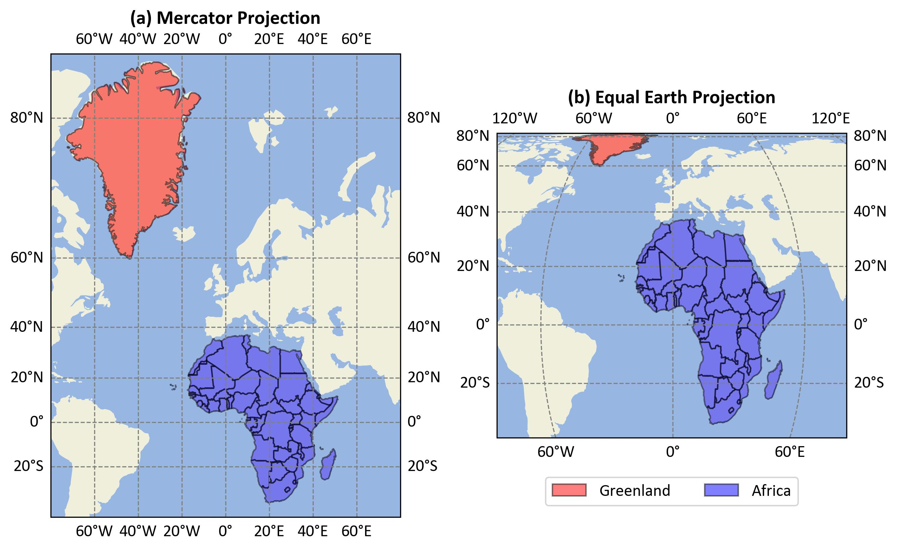
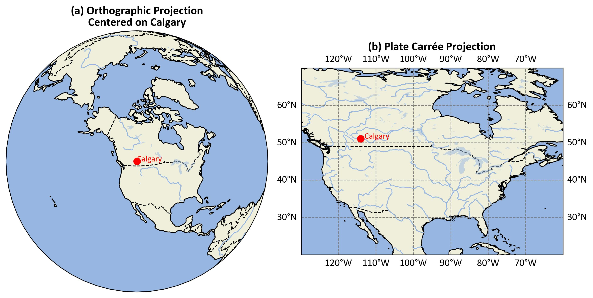
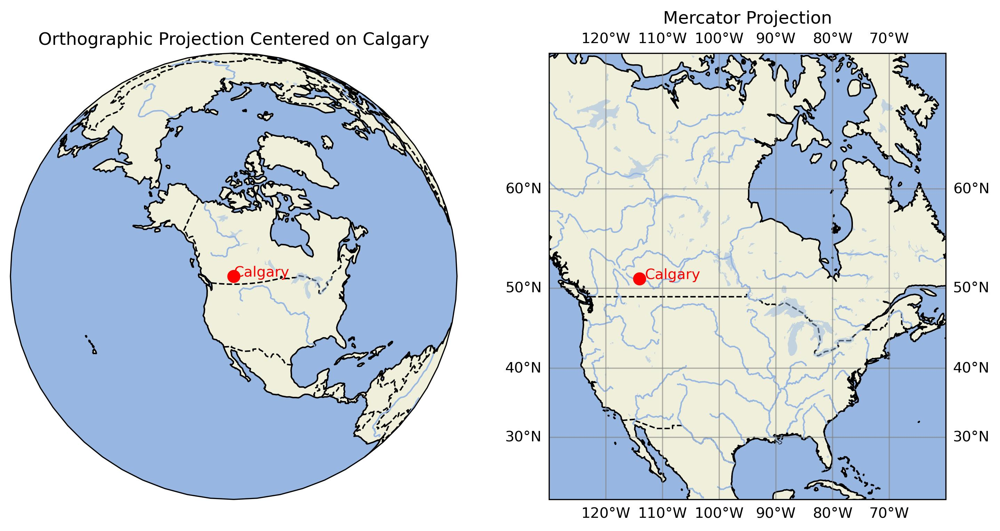

Please be aware that these lecture notes are accessible online in an ‘early access’ format. They are actively being developed, and certain sections will be further enriched to provide a comprehensive understanding of the subject matter.
Cylindrical projections are a family of map projections that transform the globe onto a cylinder, which is then unrolled into a flat map. These projections are characterized by meridians (lines of longitude) that are equally spaced parallel lines, and parallels (lines of latitude) that are straight lines perpendicular to the meridians [Kumar et al., 2023, McHaffie et al., 2023].
To better understand the concept of cylindrical projections, we can visualize the process using a central cylindrical projection method. Fig. 2.11 illustrates this method:
Fig. 2.11 Illustration of Central Cylindrical Projection: A light source at the center of a semitransparent globe casts shadows onto photographic film wrapped cylindrically around it, demonstrating how Earth’s surface can be mapped onto a flat plane. Credit: Wikipedia.org. Link to Image.#
This illustration demonstrates the central cylindrical projection method used in cartography:
Semitransparent Globe: The figure shows a globe with a grid of meridians and parallels, representing Earth’s surface.
Light Source: A light is placed at the center of the globe.
Photographic Film: A cylindrical piece of photographic film is wrapped around the globe.
Projection Process: The light source projects the grid from the globe onto the cylindrical film, resulting in a distorted representation of Earth’s surface on the flat film.
This method demonstrates how a three-dimensional object (the globe) can be projected onto a two-dimensional surface (the film), which is a fundamental concept in map-making. The central cylindrical projection is particularly useful for understanding how different map projections handle the challenge of representing the curved surface of the Earth on a flat plane.
While this visual aids in understanding the concept, it’s important to note that modern map projections are mathematically derived rather than physically projected. The actual equations and processes used in creating maps like the Mercator or Plate Carrée projections are more complex and precise than this physical analogy suggests.
2.4.2. Characteristics of Cylindrical Projections#
Cylindrical projections are a family of map projections that conceptually involve wrapping a cylinder around the Earth and projecting its features onto this surface. When the cylinder is “unrolled,” it creates a rectangular map with distinct characteristics [Hinks, 2016, Robinson, 1995, Snyder, 1987]:
Non-Conformal Nature:
Most cylindrical projections (with notable exceptions like the Mercator) are non-conformal, meaning they do not preserve angles. This results in shape distortion, which becomes more pronounced as you move away from the equator. For instance, landmasses near the poles appear stretched horizontally compared to their actual shape.
Non-Equal-Area Property:
Cylindrical projections typically do not preserve area accurately. Regions far from the equator appear disproportionately large compared to their true size. This effect is particularly noticeable in the Mercator projection, where Greenland appears similar in size to Africa, despite being about 14 times smaller in reality [Crew, 2019].
Fig. 2.12 compares the sizes of Greenland and Africa using two different map projections:
Mercator Projection (Left):
Distortion: Greenland appears almost as large as Africa.
Usage: Commonly used for navigation because it preserves angles and directions but distorts size, especially near the poles.
Equal Earth Projection (Right):
Distortion: Africa is shown significantly larger than Greenland, reflecting their true relative sizes.
Usage: Designed to provide a more accurate representation of area, reducing size distortion.

Fig. 2.12 Comparison of Greenland and Africa Sizes in Different Projections.#
This comparison highlights how different projections can alter the perceived size of landmasses, which is crucial for understanding global geography accurately.
Equator Representation:
The equator is consistently depicted as a straight horizontal line across the map. It is the only parallel of latitude that maintains true scale throughout the projection. This makes cylindrical projections particularly useful for mapping equatorial regions with minimal distortion.
Meridian Representation:
Meridians (lines of longitude) are represented as equally spaced vertical lines. This creates a grid-like appearance on the map, with all meridians intersecting parallels at right angles. While this makes for a visually organized map, it contributes to the distortion of shapes and areas, especially at high latitudes.
Pole Representation:
A significant limitation of cylindrical projections is their inability to show the poles accurately. As latitude (\(\phi\)) approaches ±90°, the mathematical function \(\tan(\phi)\) approaches infinity. In practice, this means that the poles are either not shown at all or are represented as lines stretching across the entire width of the map, rather than as points.
Scale Variation:
The scale of the map varies depending on the latitude. While the scale along the equator remains constant, it increases dramatically as you move towards the poles. This variation in scale is a primary reason for the area distortion characteristic of cylindrical projections.
Rhumb Line Representation:
In some cylindrical projections, like the Mercator, rhumb lines (lines of constant bearing) appear as straight lines. This property made the Mercator projection invaluable for navigation before the advent of GPS technology.
Symmetry:
Cylindrical projections typically exhibit symmetry about the equator and the central meridian. This symmetry can be visually appealing and useful for certain applications, but it also means that distortions are mirrored in the northern and southern hemispheres.
Understanding these characteristics is crucial for cartographers and map users alike. It allows for informed decisions about when to use cylindrical projections and how to interpret the information they present. While cylindrical projections have limitations, particularly in representing polar regions and global scale relationships, they remain valuable for specific applications, especially those focused on equatorial or tropical regions [Robinson, 1995].
Cylindrical projections, particularly the central cylindrical projection, exhibit significant distortion that increases rapidly with distance from the equator. This distortion is primarily due to the mathematical properties of the projection, specifically the behavior of the \(\tan(\phi)\) function in its formulae [Hinks, 2016, Wikipedia, 2024].
Distortion Characteristics:
Minimal Distortion at the Equator: The equator (0° latitude) serves as the line of tangency between the cylinder and the globe, resulting in minimal distortion along this line [Hinks, 2016, Wikipedia, 2024].
Increasing Distortion with Latitude: As latitude increases, the distortion becomes more pronounced:
At approximately 45° latitude, the scale is doubled compared to the equator.
Beyond 60° latitude, the distortion becomes severe, making these projections impractical for high-latitude regions.
Pole Representation: In the central cylindrical projection, the poles cannot be represented as they would theoretically be infinitely far from the equator.
The distortion in cylindrical projections is mathematically described by the secant of the latitude (\(\sec(\phi)\)). For the central cylindrical projection, the north-south stretching is proportional to \(\tan(\phi)\), which grows even more rapidly than \(\sec(\phi)\). Due to these distortion characteristics, the central cylindrical projection is seldom used for world maps [Hinks, 2016].
(2.1)#\[\begin{split}\begin{cases}
x = R \cos(\phi_1) (\lambda - \lambda_0),
\\ ~\\
y = R (\phi - \phi_0).
\end{cases} \end{split}\]
Where:
\(R\) is the radius of the Earth
\(\lambda\) is the longitude
\(\lambda_0\) is the central meridian
\(\phi\) is the latitude
\(\phi_0\) is the latitude of origin
\(\phi_1\) is the standard parallel
Key points about this projection:
It’s a cylindrical projection where meridians and parallels are straight lines forming a rectangular grid.
The factor \(\cos (\phi_1)\) in the x equation ensures that the scale is true along the standard parallel \(\phi_1\).
When \(\phi_1 = 0^\circ\) (i.e., the standard parallel is the equator), this becomes the special case known as the Plate Carrée projection.
The projection is equidistant along meridians and the standard parallel(s).
It’s neither conformal nor equal-area, but it’s simple to construct and calculate.
Distortion increases with distance from the standard parallel(s).
This formula represents a more general form of the Equidistant Cylindrical projection compared to the one I provided earlier, as it includes the latitude of origin (\(\phi_0\)) and allows for a standard parallel other than the equator.
Note
For most applications, \(\phi_0\) is set to \(0^\circ\), simplifying the y equation to \(y = R\phi\). The choice of \(\phi_1\) affects the overall shape of the map and the distribution of distortion [Bugayevskiy and Snyder, 2013].
The Plate Carrée projection, also known as the equirectangular projection, geographic projection, or lat/lon projection, is a special case of the Equidistant Cylindrical projection. It occurs when the standard parallel \(\phi_1\) is set to the equator (0°) and the latitude of origin \(\phi_0\) is typically 0°. This simplifies the equations to [Bugayevskiy and Snyder, 2013, Snyder, 1987, Wikipedia, 2023]:
(2.2)#\[\begin{split}\begin{cases}
x &= R(\lambda - \lambda_0)
\\ ~\\
y &= R\phi
\end{cases} \end{split}\]
Where:
\(R\) is the radius of the Earth
\(\lambda\) is the longitude
\(\lambda_0\) is the central meridian
\(\phi\) is the latitude
Key characteristics of the Plate Carrée projection:
It’s the simplest form of the Equidistant Cylindrical projection, offering a direct mapping of longitude to x and latitude to y.
The projection creates a grid of perfect squares, unlike other Equidistant Cylindrical projections which produce rectangular grid cells.
It’s neither equal-area nor conformal, but its simplicity makes it popular for global raster datasets and thematic mapping.
Distortion increases away from the equator, with significant shape and area distortions near the poles.
All meridians and parallels are straight lines intersecting at right angles.
Scale is true along the equator and all meridians.
The Plate Carrée projection maintains the simplicity of the Equidistant Cylindrical family while offering a straightforward relationship between geographic coordinates and map coordinates. This simplicity comes at the cost of increased distortion away from the equator, particularly in polar regions.
Example 2.6
Calgary is located at approximately 51.0447° N latitude and 114.0719° W longitude. We’ll use these coordinates in the Plate Carrée projection formulas:
Note: We use \(R = 6,371\) km as the Earth’s mean radius and assume \(\lambda_0 = 0\).
Fig. 2.13 illustrates Calgary’s location using two projections:

Fig. 2.13 Calgary’s location shown in orthographic (left) and Plate Carrée (right) projections.#
Left: Orthographic Projection
Provides a 3D-like view of Earth centered on Calgary.
Calgary is marked with a red dot and labeled.
Shows Calgary’s global position in relation to Earth’s curvature.
Right: Plate Carrée Projection
2D representation using the Plate Carrée projection.
Calgary is marked and labeled, showing its position in North America.
Map extent: -130° to -60° longitude, 20° to 70° latitude.
Demonstrates how geographic coordinates are transformed into a rectangular grid.
The Plate Carrée projection maps longitude directly to x and latitude directly to y, resulting in a rectangular grid where all cells have equal area in the projection (but not on the actual globe). This makes it simple to understand but introduces significant distortions, especially at higher latitudes [PROJ Developers, 2024].
The Mercator projection is a cylindrical map projection presented by Flemish geographer and cartographer Gerardus Mercator in 1569 [Snyder, 1987]. It is conformal, preserving angles and local shapes, which made it the standard map projection for nautical purposes [Wikipedia, 2024].
The equations for the Mercator projection are:
(2.3)#\[\begin{split}\begin{cases}
x &= R(\lambda - \lambda_0)
\\ ~\\
y &= R \ln\left(\tan\left(\dfrac{\pi}{4} + \dfrac{\phi}{2}\right)\right)
\end{cases}\end{split}\]
Where:
\(R\) is the radius of the Earth
\(\lambda\) is the longitude
\(\lambda_0\) is the central meridian
\(\phi\) is the latitude
Characteristics of Mercator:
Conformal: The projection preserves local shapes and angles, making it valuable for navigation [Pijls, 2001].
Distortion: Area distortion increases dramatically towards the poles. Landmasses such as Greenland and Antarctica appear far larger than they actually are relative to equatorial regions [Wikipedia, 2024].
Rhumb Lines: Any straight line on a Mercator map is a line of constant bearing, known as a rhumb line or loxodrome [MathWorld, n.d.].
Usage: While useful for navigation, it’s not recommended for world maps or other general purposes due to its significant area distortion [Snyder, 1987].
Limitations: The poles cannot be shown as they project to infinity. The map must be truncated at some latitude less than 90 degrees [Wikipedia, 2024].
Web Mapping: A variant called Web Mercator is widely used in web mapping services such as Google Maps [Wikipedia, 2024].
The Mercator projection’s ability to preserve angles at the cost of distorting area has made it both useful and controversial, leading to ongoing debates about its appropriate use in different contexts [Rummler, 2002].
Example 2.7
Let’s consider the coordinates for Calgary from Example 2.6 to demonstrate the Mercator projection:
Note: We use \(R = 6,371\) km as the Earth’s mean radius and assume \(\lambda_0 = 0\).
Fig. 2.14 illustrates Calgary’s location using two projections:

Fig. 2.14 Calgary’s location shown in orthographic (left) and Mercator (right) projections.#
Left: Orthographic Projection
Provides a 3D-like view of Earth centered on Calgary.
Calgary is marked with a red dot and labeled.
Shows Calgary’s global position in relation to Earth’s curvature.
Right: Mercator Projection
2D representation using the Mercator projection.
Calgary is marked and labeled, showing its position in North America.
Demonstrates how geographic coordinates are transformed, with increasing distortion towards the poles.
The Mercator projection preserves angles and shapes locally but distorts areas, especially near the poles. This makes it useful for navigation but less suitable for comparing land areas at different latitudes.

{kind=link}